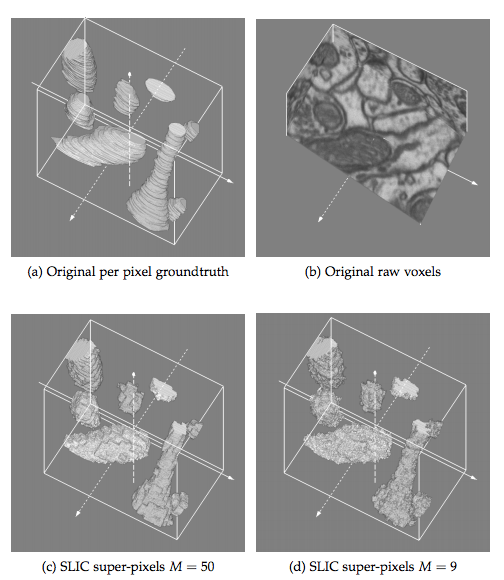

Ruben Wolff
+41 44 435 10 93
ruben.wolff@d1-solutions

Upcoming Talks
- The surprising Utility of NLP algorithms on non Text data - at - SwissText 2018 - agenda
Recent Talks
Consulting Work
- Medical Claim Embedding Space from Medical Insurance Metadata
- Medical Records Diabetes Risk Prediction
- Medical Insurance Claims Adjudication Automation
- Claim Processing Time/Complexity prediction
- Automate Model refresh loop of Productive Machine learning Model (Data aquisition, Model training, Model Evaluation, Hot swap productive model behind live API)
- Datawarehouse Modeling and Generation Package
- Data Architecture Datawarehouse Belgium Healthinsurance (Tech Talk)
- Deployment Automation Datawarehouse (Related Slides)
Past Jobs
- Data Scientist at
![Credit Suise]() investigating market behaviorsin timeseries datasets and developing algorithmic trading strategies Under Joerg Schmuecker
investigating market behaviorsin timeseries datasets and developing algorithmic trading strategies Under Joerg Schmuecker - Software Developer at
 developing a Personalized Oncology Drug Suggestion Tool Demo
developing a Personalized Oncology Drug Suggestion Tool Demo - Neuroscience Researcher at leading a Guanfacine Selective Attention inVivo Study under Marco Atzori . Pre-print here